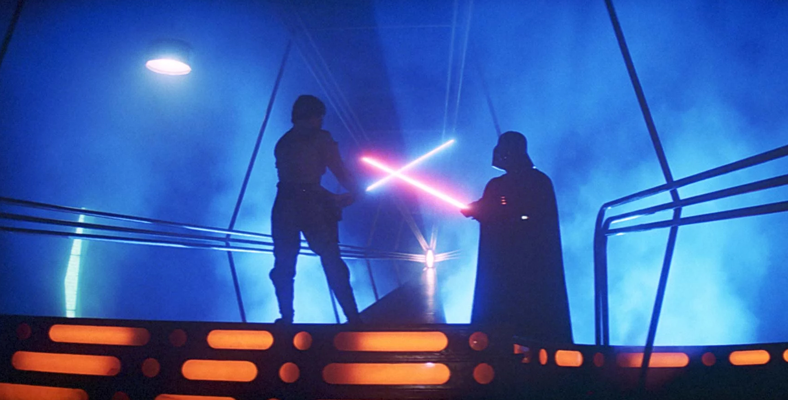
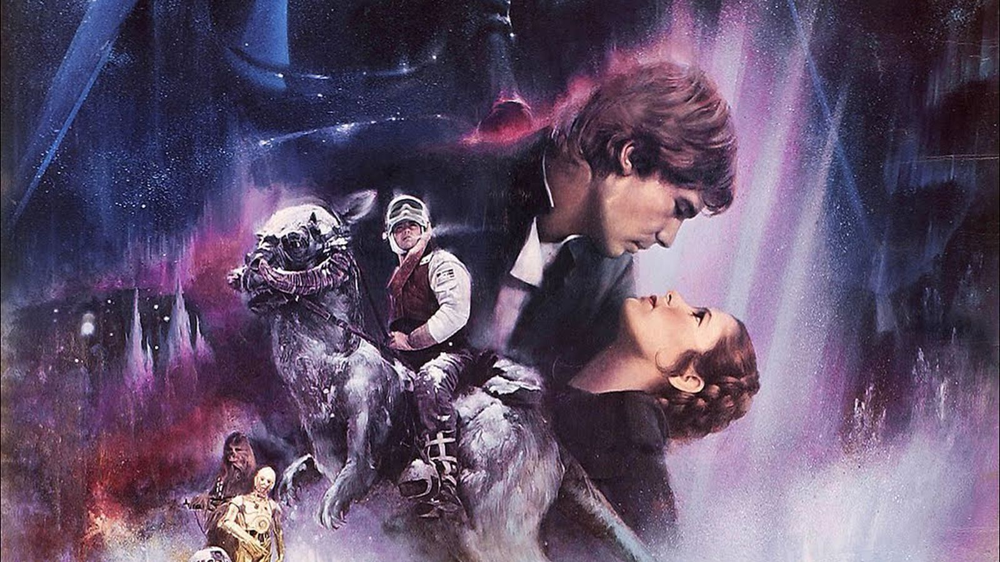

The sequel to Star Wars: A New Hope, released in 1980 and directed by Irvin Kershner.
The opening scenes were filmed in Norway.
Alec Guinness filmed his scenes very quickly, all in one day.
All the extras that played Rebel Troops on Hoth were Norwegian mountain-rescue skiers
